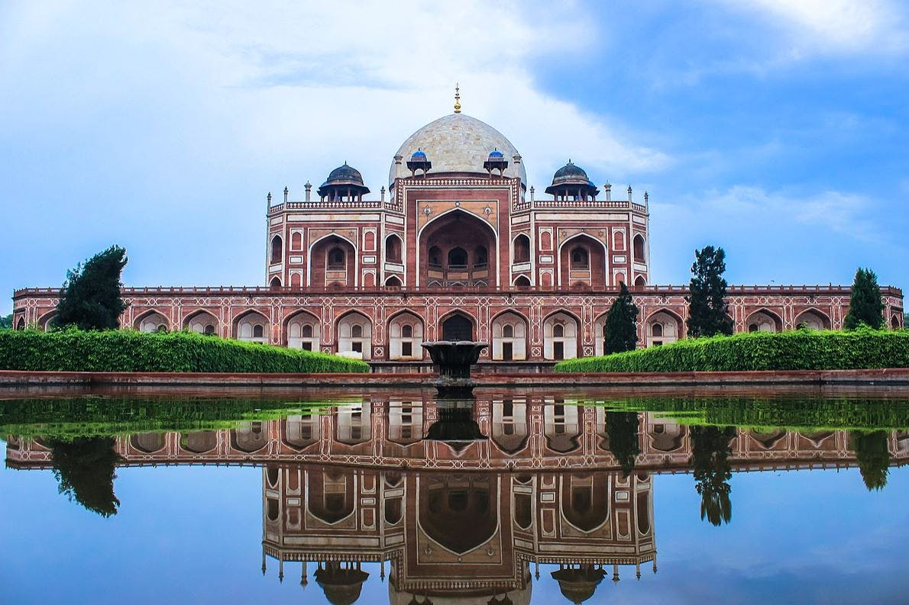
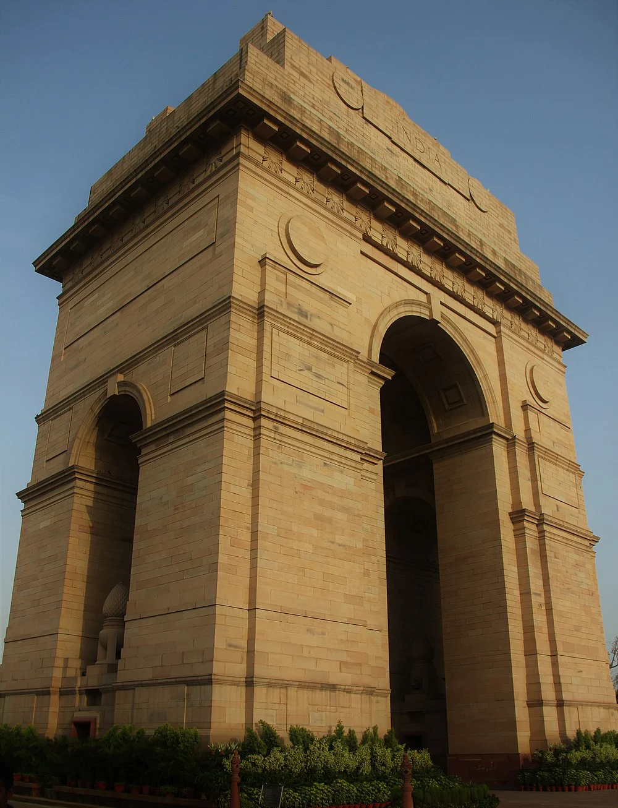
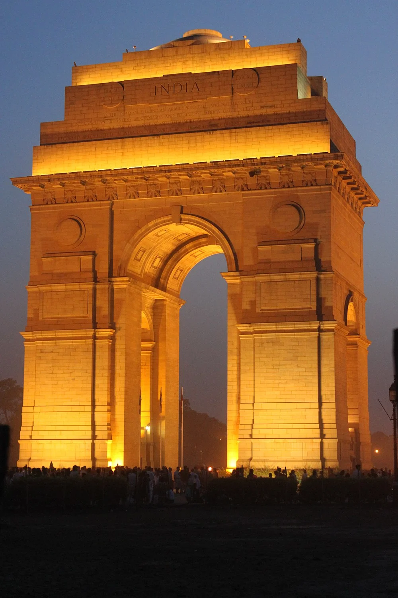
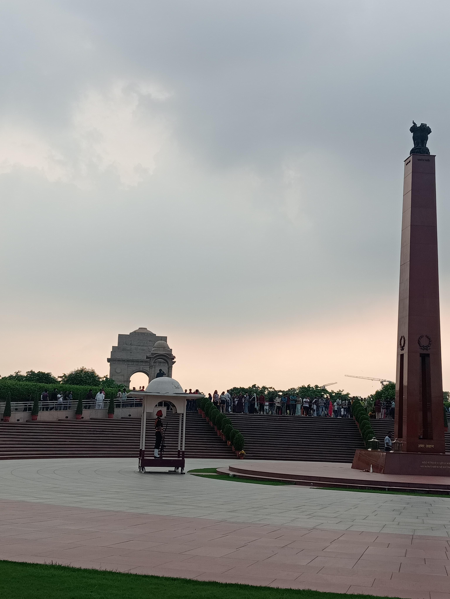
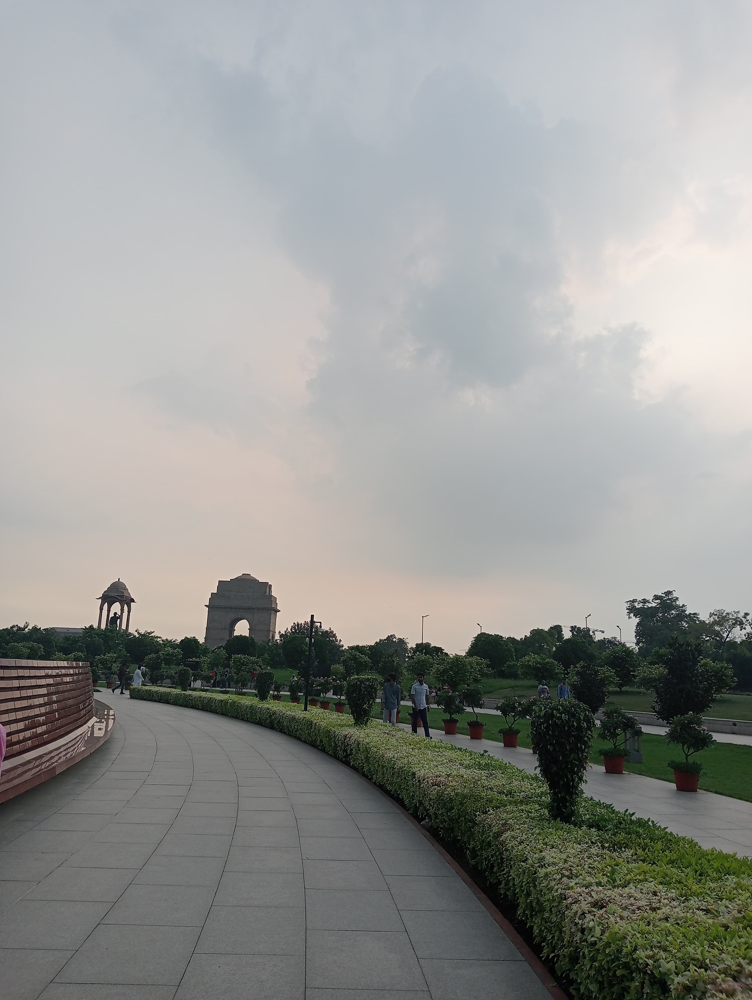
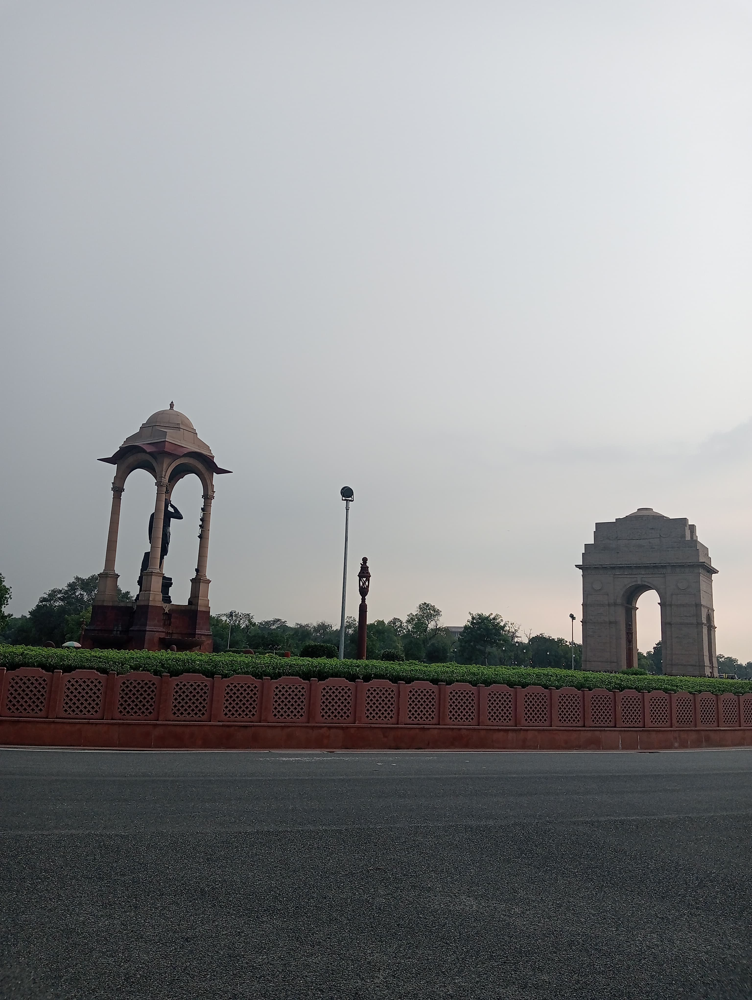
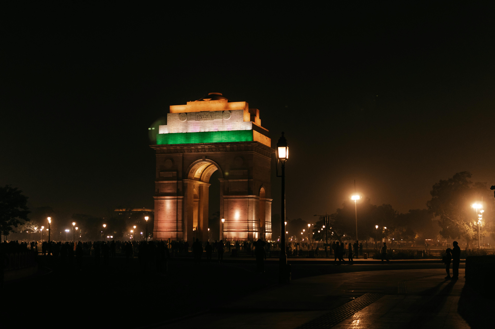

Humayun's Tomb, a UNESCO World Heritage Site, is a stunning example of Mughal architecture, featuring beautiful gardens, intricate carvings, and majestic domes. This historical masterpiece, built in the 16th century, offers visitors a glimpse into India's royal past. Explore its serene beauty and rich history on your Delhi visit!
Humayun�s Tomb visiting hours are between sunrise and sunset.
Humayun's Tombr ticket price for Indians is Rs 35 and for foreigners it is Rs 550. For visitors from BIMSTEC and SAARC nations, the Humayun�s Tomb entry ticket price stays the same at INR 35 each. Howver, if you are an international visitor, the Humayun�s Tomb ticket price is INR 550. The entry is free for children under the age of 15.
| Nearest Metro Station | Jor Bagh |
| Nearest Railway Station | Nizamuddin Railway Station |
| Nearest Bus Stand | Kashmiri Gate Bus Station |
| Nearest Airport | Indira Gandhi International Airport |
| Monsoon | August To September |
| Summer | Starts in early April and peak in May & Temperature is 32�C (avg) |
| Winter | Starts in November and peaks in January & Avg Temperature is 12 to 13�C |
| Recommended Season to Visit | November to March |






#
There are more than 100 graves within the entire complex. Several of them are on the first level terrace, known as �Dormitory of the Mughals�
#
Humayun�s Tomb was designed by a Persian architect, Mirak Mirza Ghiyath.
#
It was the first Indian building known as a classic specimen of the double-domed elevation with kiosks on a huge scale.
#
The tomb�s concept of eight side chambers symbolizes the Islamic concept of paradise.
#
Humayun�s Tomb has earned the status of being a landmark in the expansion of Mughal architecture.